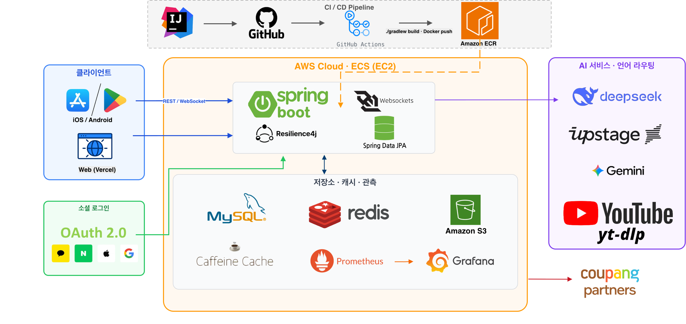

서비스 하나를 2년째.
만들고 운영하고 복구했습니다.
레시피 플랫폼 Recipio(해먹)는 캡스톤에서 시작해 지금까지 운영 중인 팀 서비스입니다. 3인 팀(백엔드 2 · 프론트 1)에서 백엔드를 맡아 만들고 운영해왔습니다. 트래픽이 생기면서 성능 문제와 장애를 겪었고 AI API 청구서도 줄여야 했습니다. 이 문서에는 그 과정에서 증거가 남아 있는 것만 담았습니다.
주도
AI 파이프라인(생성·유튜브 추출·챗봇) · 검색 엔진 구축과 다국어 검색 · 추천·성능 최적화 · 다국어(i18n) 파이프라인 · 모니터링(Prometheus/Grafana)백엔드 팀원 주도
인증(OAuth 4사 · JWT · 토큰 회전) · 초기 AWS/ECS 배포 파이프라인 · 냉장고·레시피북 도메인공동
레시피 코어 도메인 · 유튜브 추출(AI·동시성 설계=본인 / API 계층=팀원) · DB 마이그레이션 · 테스트이 문서의 사례는 전부 커밋 단위로 제가 작성한 것인지 확인한 뒤 실었습니다.
서비스 개요와 타임라인

구축
레시피 CRUD·댓글·태그·평점, OpenSearch 기반 검색 엔진, AI 레시피 생성(내부 모델).
성능 병목 수습
트래픽이 생기며 문제가 시작됐습니다. 추천 쿼리의 카르테시안 곱이 힙을 태우는 것을 잡았고(후보 상한 도입), 목록 조회의 N+1을 프로젝션으로 걷어냈습니다. AI 생성 모델을 Grok으로 전환하며 프롬프트 체계를 다시 세웠습니다.
파이프라인과 운영
유튜브 영상에서 레시피를 추출하는 파이프라인을 만들었습니다. 같은 영상에 동시 요청이 몰리면 추출은 한 번만 하는 합승(bus) 구조와 3단계 트랜잭션 경계를 설계하고 동시성 통합 테스트로 고정했습니다. 이때 구축한 Prometheus/Grafana 모니터링이 이후 진단의 참조점이 됐습니다.
검색 스택의 수명주기 — 도입한 사람이 제거를 검증하다
2025년 5월 OpenSearch를 도입해 검색을 만들었고 하이브리드 재료 검색과 장애 시 QueryDSL 폴백까지 운영했습니다. 2026년, 프리티어 종료로 비용 부담이 커지자 팀은 제거를 결정했습니다. 제 역할은 "MySQL만으로 버틸 수 있는가"의 검증이었습니다. 10만 건·동시 8 조건에서 LIKE p95가 1,902ms, 튜닝한 MySQL 경로가 456ms로 기준 500ms를 통과해 제거 가능으로 판정했습니다. ko 메인 검색의 ngram FULLTEXT 전환 구현은 팀원의 작업이고 저는 그 위에 다국어 검색 코퍼스와 장애 대응 경로를 만들었습니다. 검색엔진 재도입 판단 기준(형태소 분석·동의어 요구 발생 시)도 문서로 남겼습니다. ADR-0006 ↗
10만 건 번역을 감당하는 파이프라인 —
외부 큐 없이, 실패 처리를 설계의 중심에
2년 차, 서비스를 일본어·영어권으로 확장하기로 했습니다. 레시피 본문·재료명·단위·댓글까지, 대상은 레시피 번역 잡만 누적 10만 7천 건입니다. 요청 시점 번역으로는 감당할 수 없는 규모였습니다. 이 파이프라인은 설계와 구현을 제가 주도했습니다(i18n 경로 커밋 32:6, 2026-07 main 기준).
번역 그 자체는 API 호출 한 번입니다. 어려운 건 실패 쪽이라 이 작업을 비동기 잡·상태 기계·복구 수단의 문제로 정의했습니다. 운영해 보면 AI 번역은 부분적으로, 지난번과 같은 방식으로 또 실패합니다.
왜 SQS가 아니라 MySQL 잡큐인가
잡 상태는 운영 중에 조회하고 리셋하고 우선순위도 바꿔야 하는 도메인 데이터였습니다. 외부 큐는 잡 상태와 도메인 데이터의 트랜잭션 정합을 따로 맞춰야 하고 단일 RDS·2인 팀에서 인프라 추가 비용도 정당화되지 않았습니다. UNIQUE(recipe, locale) 제약으로 enqueue 멱등성을 DB가 보장합니다.
잡큐 패턴 자체는 팀 코드베이스에 이미 있던 것을 가져왔습니다. 옮겨 심으면서 패턴에 숨어 있던 결함 세 개를 실측으로 찾아 메웠습니다:
- 경쟁 패배 ≠ 큐 비움. 두 워커가 같은 잡을 두고 경쟁해 진 쪽이 "큐가 비었다"고 판단하고 멈추는 버그. 원자적 선점(UPDATE 한 문장의 CAS)과 재스캔 루프로 분리
- afterCommit enqueue 유실. 커밋 이후 훅에서 enqueue하면 이미 끝난 트랜잭션에 참여해 INSERT가 사라지는 Spring 트랜잭션 동기화 함정. 신규 트랜잭션으로 분리
- poison job 무한 재선점. 워커를 죽이는 잡은 재시도 카운트가 영원히 오르지 않아 무한 재선점됨. 선점 횟수를 별도로 세어 AI 호출 전에 격리. "최대 선점 > 최대 재시도" 불변식을 주석으로 문서화
-- 선점 CAS: 후보 id를 SELECT한 뒤, 같은 조건을 WHERE로 재검사하며 RUNNING 전환
UPDATE recipe_translation_jobs
SET status = 'RUNNING', locked_until = :lockedUntil, claim_count = claim_count + 1
WHERE id = :id
AND (status IN ('PENDING','STALE')
OR (status = 'FAILED' AND retry_count < :maxRetry)
OR (status = 'RUNNING' AND locked_until < :now AND retry_count < :maxRetry))
-- affected 1 = 이 워커가 선점 · 0 = 경쟁 패배 → 다음 후보 재스캔이 설계가 실전에서 작동한 흔적이 잡 테이블에 남아 있습니다. 누적 잡의 99.6%가 한 번의 선점으로 끝났고 재선점 2회 이상은 479건, 최대 4회 1건으로 격리 임계 안입니다. 잡당 평균 처리는 ja/en 기준 4.4~6.6초입니다.
실패 패턴에 맞춘 per-step 폴백
통짜 번역이 "조리 스텝 개수 불일치"로 실패하는 패턴이 반복됐습니다. 그래서 마지막 시도는 스텝을 1건씩 번역하는 폴백으로 전환했습니다. 호출 하나가 스텝 하나만 처리하니 개수 불일치가 구조적으로 불가능해집니다. kill switch와 전용 카운터도 함께 심었습니다.
FAILED 25건의 목록에 스텝 개수 불일치 유형은 한 건도 없습니다. 대부분은 언어 순수성 게이트(출력에 원문 한글이 남으면 차단)가 의도한 차단이고 나머지는 일시적 503입니다.
per-step 번역은 스텝 사이 문맥을 잃습니다. 그래도 폴백까지 오는 레시피는 애초에 원본부터 조각나 있어서 404 대신 서빙하는 쪽이 낫다고 판단했습니다.
제품 정책과 물린 strict 노출 게이트
미번역 콘텐츠는 노출하지 않는 정책(미번역 상세=404)을 선택했습니다. 반쪽 번역 페이지가 SEO에도 사용자 신뢰에도 더 해롭다고 봤기 때문입니다. 이 정책은 "어떤 레시피가 어떤 언어로 노출 가능한가"의 명단이 항상 정확해야 성립합니다.
이 명단은 번역 상태의 진실로부터 멱등 재계산되고 재계산 서비스는 저장 트랜잭션에 함께 참여합니다. 다만 전면 404는 아니고 단위나 조리도구 같은 부속 필드는 원문으로 낮춰 보여줍니다. 단위 하나 때문에 레시피 전체를 막을 이유는 없으니까요.
닷새 간격의 장애 두 건
사고 2026-06-24 · 06-29. 본 회고는 2026-07 재구성이며 근거는 당시 커밋과 CloudWatch 캡처입니다. 전체 회고 ↗
1년의 성능 이력
추천 쿼리 카르테시안 곱으로 힙이 터지는 것을 수습했고 서버 응답 불능을 겪으며 커넥션 풀을 10에서 30으로 늘렸습니다. 이때 늘린 풀 30이 아래 두 장애의 배경입니다.
1막 · 커넥션 풀 고갈, 설정 한 줄로 종결
딥다이브 1의 번역 파이프라인이 코퍼스를 약 8.7만 행까지 밀어 올리자 LIKE 풀스캔 검색이 커넥션을 초 단위로 점유하기 시작했습니다. 풀 30개가 고갈되며 검색과 무관한 로그인·상세·사이트맵까지 연쇄로 5xx가 났습니다.
수습은 설정 한 줄이었습니다. 13일 전, FULLTEXT 검색 경로를 플래그 off 상태로 미리 배포해뒀기 때문입니다(dark deploy). 플래그를 켜는 것으로 종결했고 위험 경로에는 쿼리당 5초 타임아웃을 다음 날 추가했습니다.
2막 · 같은 증상이 돌아왔다, 이번엔 디스크
닷새 뒤 전 구간이 느려졌고 COUNT 쿼리 하나가 30초를 넘겼습니다. 처음엔 직전 배포의 무거운 쿼리를 의심해 최적화했지만 효과가 없었습니다. 증상을 원인으로 착각한 겁니다.
다시 관찰하니 패턴이 보였습니다:
| 관찰 | 해석 |
|---|---|
| SELECT 1 정상 | 네트워크·커넥션 계층 정상 |
| PK 단건 조회 정상 | 버퍼풀에 있는 페이지 접근 정상 |
| 스캔 쿼리만 일제히 지연 | 디스크를 읽는 순간만 느리다 |
병목은 스토리지였습니다. 쿼리는 멀쩡했습니다. CloudWatch에서 BurstBalance = 0을 확인했습니다. gp2 20GiB 볼륨의 기준 성능은 100 IOPS인데 데이터와 트래픽이 자라며 버스트 크레딧이 바닥난 것입니다. 캡처를 보면 크레딧은 사고 전날 이미 고갈됐고 하루 가까이 스로틀 상태로 달리고 있었습니다. 쿼리 튜닝으로 풀 수 없는 문제라 스토리지를 gp3(기준 3,000 IOPS, 월 비용은 오히려 감소)로 무중단 전환해 종결했습니다. RAM 증설은 비용이 몇 배로 뛰는 데다 재시작이 필요했고, 리드 레플리카는 읽기를 나눌 뿐 IOPS 문제 자체를 풀지 못합니다. gp3 전환이 가장 정확한 처방이었습니다. 회고 전문·캡처 ↗
3막 · 임계를 미리 재다 용량 산정
장애 수습에서 멈추지 않고 다음 임계를 미리 쟀습니다. 유튜브 추출 경로가 메모리를 얼마나 견디는지 보려고 운영과 동일한 1.5GiB 컨테이너를 재현해 부하를 걸었고 동시 20건에서 OOM kill(exit 137)이라는 임계를 얻었습니다. 결론은 "스레드풀을 늘리지 말 것". 이후 팀이 컨테이너 메모리를 3GiB로 늘려서 이 수치는 재측정이 필요해졌습니다. 측정 하니스는 재현 가능하게 남아 있어 다시 돌리면 됩니다. 측정 문서 ↗
1년, 5개 프로바이더
2025년 6월 AI 레시피 생성을 내부 모델에서 OpenAI로 전환한 뒤 1년간 프로바이더를 네 번 갈아탔습니다. 전환마다 이유가 있었지만 초기 전환은 감에 가까웠습니다. 이 장은 그 감을 실측으로 바꾼 마지막 전환의 기록입니다.
유튜브 추출 1단계(자막→구조화)에 쓰던 Grok은 품질이 좋았지만 건당 약 20.7원이었습니다. 더 싼 모델로 바꾸려던 첫 시도(일괄 전환)는 품질 결함 5종을 만들어 롤백했습니다. 이후로 모델 전환은 실패 패턴으로 평가합니다. 평균 점수는 이런 결함을 가려버립니다.
실측, 그리고 라우팅
표본 192건으로 Gemini·DeepSeek을 비교하고 Grok 운영 실측을 기준점으로 삼았습니다. 둘을 가른 것은 능력 하나였습니다. 깨진 한국어 ASR 자막의 복원("실레기"→"시래기")에서 Gemini는 6건 중 6건을 살렸고 비추론 모델은 0건이었습니다. 그런데 이 능력이 필요한 건 한국어 영상뿐입니다. 그래서 모델을 하나 고르는 대신 언어로 라우팅했습니다. 복원이 필요한 한국어는 Gemini(3~5원), 그 외 언어는 DeepSeek(2.3원)입니다. 배포는 기본값을 기존 Grok으로 둔 hidden deploy로 하고 설정 전환으로 활성화했습니다. 설계 기준 비용은 기존 대비 약 1/5 수준입니다. 다만 일 100건 가정의 추정이라 청구서 검증을 진행할 예정입니다. 비교 리포트 ↗
측정이 계속되게 만들기
일회성 비교로 끝나지 않도록 챗봇 경로는 호출당 토큰(입력/캐시/출력)·지연·프롬프트 버전·추정 비용을 DB에 영속화했습니다. 실제로 사후 SQL 한 벌이면 이런 답이 나옵니다(2026-07 운영 스냅숏): 누적 494콜, 호출당 평균 ₩0.46, v6→v7.2에서 p50 1,994→1,630ms · p95 6,414→4,534ms · Pro 모델 호출률 93.1→87.3%. 통제 실험은 아니지만 운영 분포에서도 최종 버전에 지연 회귀가 없다는 걸 이 데이터로 확인했습니다. 프롬프트는 버전 있는 리소스 파일로 관리하고 버전 라벨을 파일명에서 유도해 기록과 실체가 어긋나지 않게 했습니다.
폐기 문서도 결과다
챗봇 프롬프트 개선은 4연속 통제 실험(단일 변수씩)으로 진행했습니다. 1차 실험은 "효과 없음"으로 판정하고 폐기 문서로 남겼습니다. 판정 자체가 실험의 목적이었기 때문입니다. 3차의 안전 강화 프롬프트는 지연을 +116% 악화시켰고 최종안은 안전 개선을 유지한 채 그 회귀를 상쇄했습니다(v6 대비 +7%). "-51% 개선"이 아니라 "+116% 회귀의 상쇄"라고 쓰는 것이 정확합니다. eval 문서 4편 ↗
한계와 남은 과제부터 먼저 적습니다
- 검색 스택 잔해. OpenSearch는 트래픽 차단 상태이지 코드 제거가 끝난 게 아닙니다. 단계적 제거가 백로그에 있습니다.
- 번역 큐 관측 공백. 대기 잡 수 gauge 부재로 "조용한 정지" 탐지 불가. 잡큐 4벌 복제의 추상화도 함께 남았습니다.
- 용량 임계 재측정. 컨테이너 3GiB 확대로 기존 OOM 임계(1.5GiB 기준)가 무효화됨. 하니스 재실행 예정.
- CI 테스트 게이트 부재. 테스트 2,500+개는 로컬 게이트로만 동작합니다. 실제로 회귀가 61커밋 방치된 사례가 있었습니다.
- AI 경로 비용 계측 편중. 챗봇만 영속화, 추출·생성 경로는 로그뿐입니다.
- 버스트형 지표 알람 부재. IOPS 사고의 재발 방지(크레딧성 지표 알람)가 아직 미적용입니다.
학력과 수상
세종대학교 소프트웨어학과 (2019.03–2025.08) · 캡스톤디자인 장려상(2025.06) · 교내 해커톤 4위(2025.05)